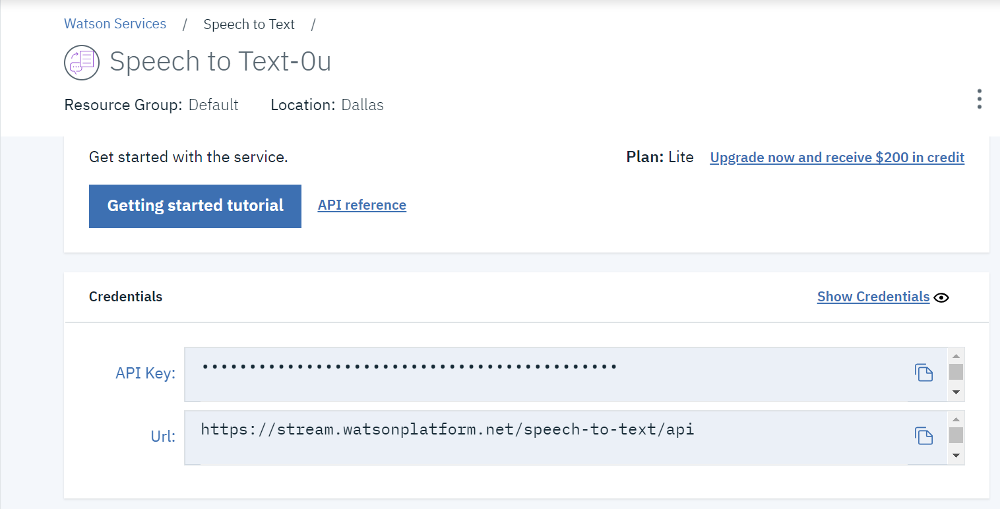
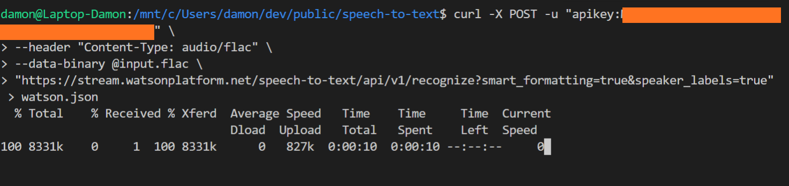
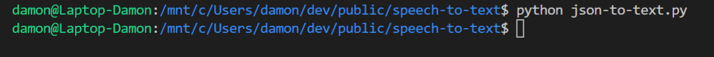

So you’ve got some audio that you want to turn into text? There are a lot of good, inexpensive options out there powered by machines, people, and a mix of the two.
If you are working with text at scale, I recommend you pay for one of the many wonderful services or pay to have someone integrate machine-learning-powered speech-to-text with your workflows.
However, if you’re just looking to transcribe an interview for something like a case study, testimonial, or qualitative feedback, you don’t have the budget to pass off this tedious work to someone else, and don’t have the patience to do everything yourself then this hacked together workflow will speed up the boring bits significantly.
I’m going to show you how to use IBM Watson’s Speech-to-Text along with Python in order to partially automate the transcription process. IBM allows 100 minutes of transcription a month which should be enough most people who need a hacky solution like this.
Machine transcription is far from perfect, and IBM Watson is no exception. You’ll need to read the output while listening along and check the words as well as add punctuation, but I’d estimate that I can do five minutes of audio in about 15 minutes of work now that I have this set up whereas it could take the better part of an hour before.
Dev Environment
You’ll need to be able to run Python in order to follow the instructions here. If you’re on Mac or Linux, you’ve already got Python installed and should be good to go.
If you’re on a Windows machine, then you have some work to do installing Python on Windows, Cygwin, or setting up the Windows Subsystem for Linux (WSL).
In my case, I’ve got WSL running Ubuntu Linux in Visual Studio Code. I installed Bash, integrated it with VS Code and then followed the Linux instructions to get Python running.
Setting this up is way beyond the scope of this article. It took me a lot of Googling but I’m sure you’ll get there if you have enough time.
Alternately, ask a Mac-using friend to borrow their computer.
Sign Up for Watson
First, create an IBM Cloud account and confirm your email, agree to give up your next child in the TOS, and finish all of the usual other setup steps.
Next, go to your IBM Bluemix Console (log in if you need) and then search for and select “speech to text”. The defaults should be fine for a hacked together tool like this.
You should be on a page listing your speech-to-text settings. We’re interested in two things. Your API Key (keep this secret) and the Url where IBM is listening for your requests.

We will need both of these things when setting up your scripts.
Set Up Your Scripts
With Python, hopefully, up and running and your IBM account you’re ready to set things up.
First, create a folder to host your scripts. We’re going to save the input audio here and have a text file to receive the output text along with the command line commands and Python scripts that do all of the work.
If you’ve already got a dev environment set up, then you know where you want to put this.
Otherwise, I recommend creating a dev folder under your user and under that add utils and speech-to-text subfolders.
Now it’s time to get the files set up. You can download them or clone them from GitHub here or follow along and add them as we go.
First, open or create a file called console.txt. This holds the command line script that you’re going to run.
What these lines do, when entered in your terminal, is tell your computer to send an audio file named input.flac to IBM’s server authenticated with your API key, return the audio as text and put it in a file called watson.json.
Remember the API key and URL from your IBM Bluemix console that I asked you to remember? You’re going to put them in here.
The API key goes in the place helpfully marked “yourapikey” in the first line.
If you kept the default region (Dallas) in setup, then you don’t need to change the URL. Otherwise, you’ll want to replace everything from _https _to _api _in the URL on the fourth line with the URL from the console.
Otherwise we’re good here.
Next, open or create a file called json-to-text.py. This file is going to parse the JSON from IBM in the watson.json file and write it to a file containing raw text named formattedtext.txt_.
We don’t actually need to do anything with this other than to save it.
Running the Script
The eagle-eyed among you will have noticed that the audio file that we’re working with is called input.flac.
If you can capture your audio in flac format, then do so because you’ll get much better results. In this case, name the file input.flac and place it in the speech-to-text folder where you installed the other files.
Otherwise, you’re going to need to convert your audio to flac format before renaming and and putting it in the correct folder. At the time of writing, this service is free but there are plenty of other ways that you can do this.
Now, open up your Terminal application. Windows users running Linux on Windows will want to open the Linux Terminal and change directory to your speech-to-text folder.
Once you’re in right folder, copy and paste the contents of console.txt (with your API key and updated URL if necessary) into the terminal.

This will take some time depending on how much audio you’re transcribing. The file I used took about one minute to transcribe one minute of audio so maybe it goes through it without fast forwarding or separating the file into chunks for parallel processing.
I usually like to take advantage of moments like this by being conspicuously idle encouraging coworkers and bosses to comment so I can respond “I’m transcribing audio as we speak. What are you doing?” It’s great for morale (well, yours at least).
When it’s done you should have a long JSON file that doesn’t look anything like the words you’re transcribing.
That little json-to-text.py file that we created earlier will fix this.
In your terminal, type python json-to-text.py and you should have your transcription in the formatted_text.txt file almost immediately. The terminal doesn’t even bother to tell you its done.

Go check formatted_text.txt where you’ll see your transcription in all its highly-in-need-of-editing glory.